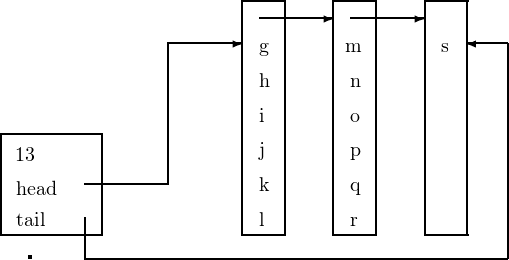

Devices such as line printers or terminals which support all the ASCII graphic symbols are often said to support the 96 ASCII character set (though there are only 94 graphics actually involved).
Devices which support all the ASCII graphic symbols except those in the last group of 32, are said to support the 64 ASCII character set. Such devices lack the lower case alphabetics and the symbols listed above, namely “~”, “{”, “|” and “\}”. Note that “delete”, since it is not a visible character, can still be supported.
Devices in this latter group may be referred to as “upper case only”.
Sometimes some of the graphic symbols may be non-standard, e.g.  instead of _ and this can be inconvenient, though not usually fatal.
UNIX prefers, as the reader is no doubt well aware, to view the world through “lower case” spectacles. Alphabetic characters received from an “upper case only” terminal are translated immediately upon receipt from upper case to lower case. A lower case alphabetic may subsequently be translated back to upper case if it is preceded by a single backslash. For output to such a terminal, both upper and lower case alphabetic characters are mapped to uppercase.
The conventions for line printers and terminals are different because:
for line printers, horizontal alignment is usually important, and it is possible (without too much difficulty) to print composite, overstruck characters (using the minus sign in this case); and
for terminals, horizontal alignment is not considered to be so important; backspacing to provide overstruck characters does not work on most VDUs; and, since the same graphic conventions are used for both input and output, the symbols should be as convenient to type as possible.